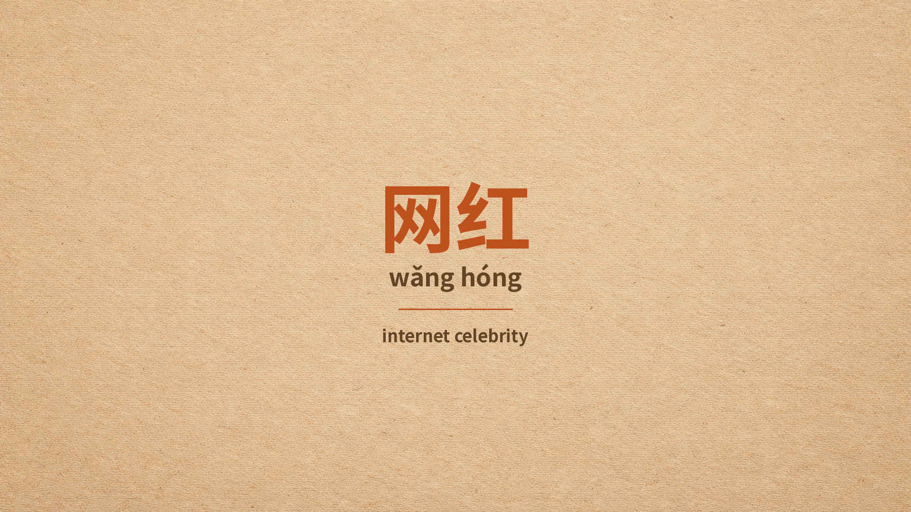
Opening大家好！今天我们来学一个超级流行的词——网红！
网，就是网络、互联网；红，就是出名、有名气。
合在一起，网红，就是在网上很有名的人，也就是网络红人！
现在中国到处都是网红，连猫和狗都能当网红……
到底是怎么回事？我们一起来看看吧！
好，我们先来看第一段，了解一下网红到底是什么。
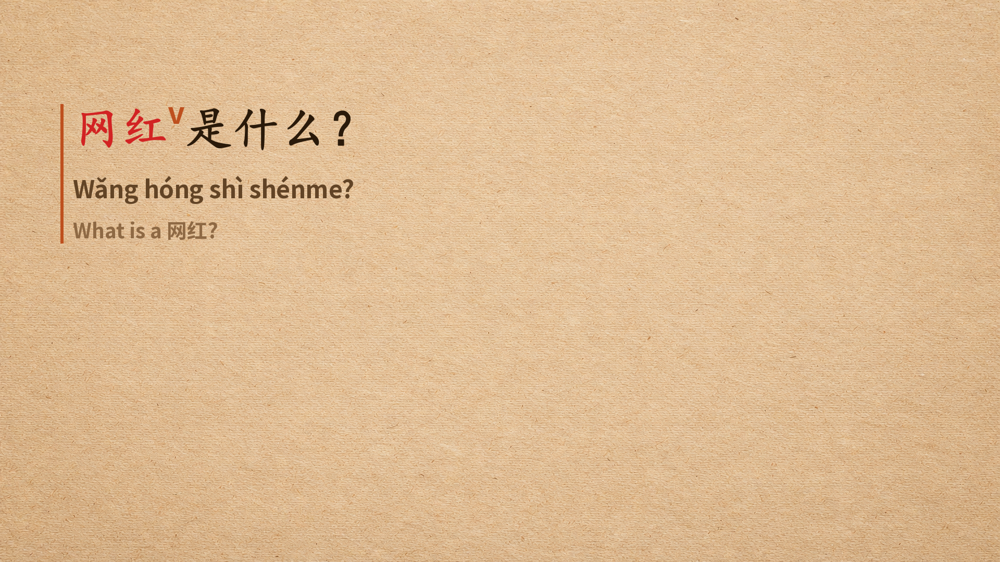
第一遍网红是什么？
注意这个句型——是什么？
"A是什么" 就是问 "A是什么意思" 或者 "A是怎样的东西"。
这个句型很常用，大家一定要记住！
好，我们再来一遍——网红是什么？
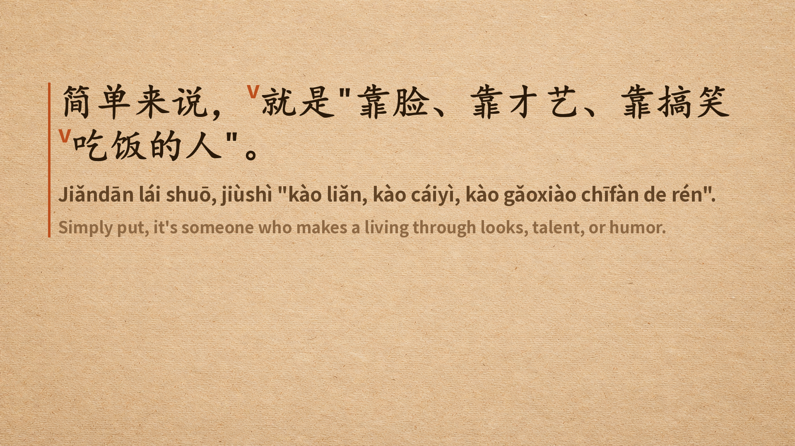
第一遍简单来说，就是"靠脸、靠才艺、靠搞笑吃饭的人"。
这里有一个很好用的结构——靠X吃饭。
靠，就是依靠；吃饭，就是谋生。
靠脸吃饭，靠才艺吃饭，靠搞笑吃饭……
大家想靠什么吃饭呢？哈哈！
还有，简单来说，这个表达很实用，意思是"简单地说"。
好，我们再来一遍——简单来说，就是"靠脸、靠才艺、靠搞笑吃饭的人"。
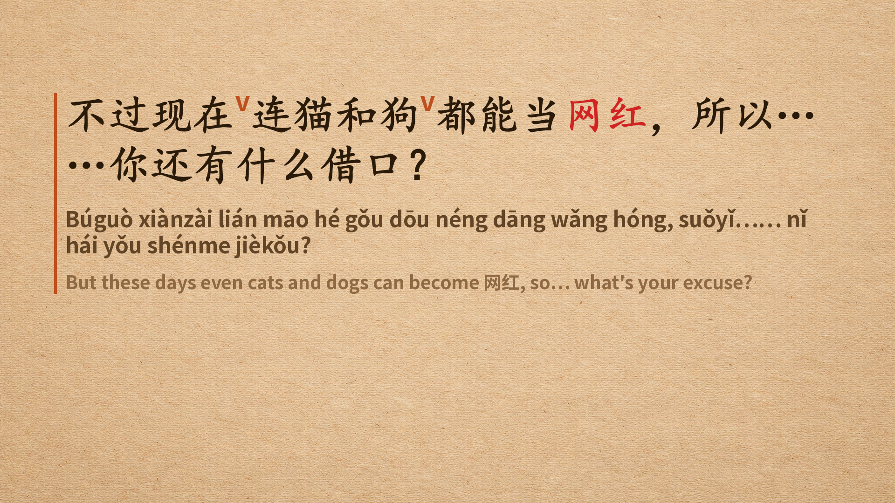
第一遍不过现在连猫和狗都能当网红，所以……你还有什么借口？
注意这个强调句型——连……都……
连猫和狗都能当网红，意思是：就连猫和狗这样的动物也能当网红！
还有一个词——借口，就是理由、托词。
你还有什么借口？哈哈，是不是压力很大？
好，我们再来一遍——不过现在连猫和狗都能当网红，所以……你还有什么借口？
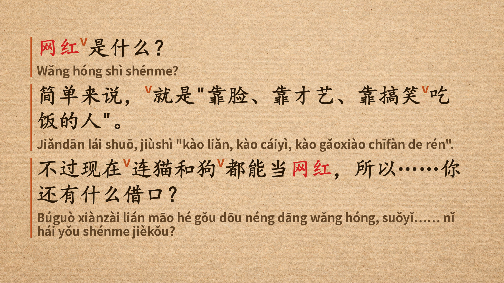
全文好，第一段结束！
我们知道了网红就是靠脸、靠才艺、靠搞笑吃饭的人，
甚至连猫和狗都能当网红。
接下来，我们来认识一下主人公小李！
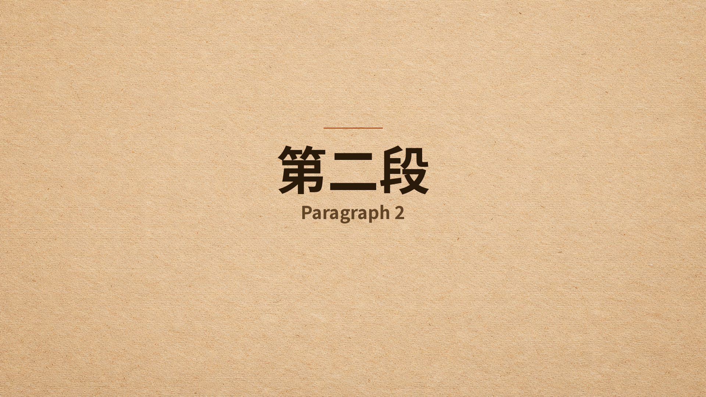
第二段第二段，我们来看看小李是怎么决定当网红的。
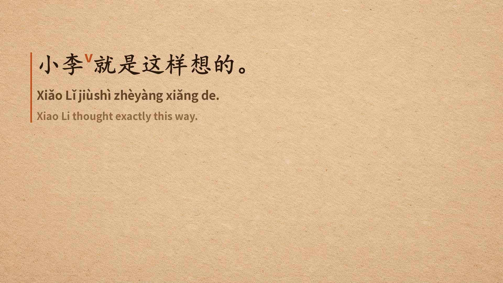
第一遍小李就是这样想的。
就是这样——这个表达表示"正是如此"或者"就是这种感觉"。
很口语化，日常生活中经常用到。
好，我们再来一遍——小李就是这样想的。
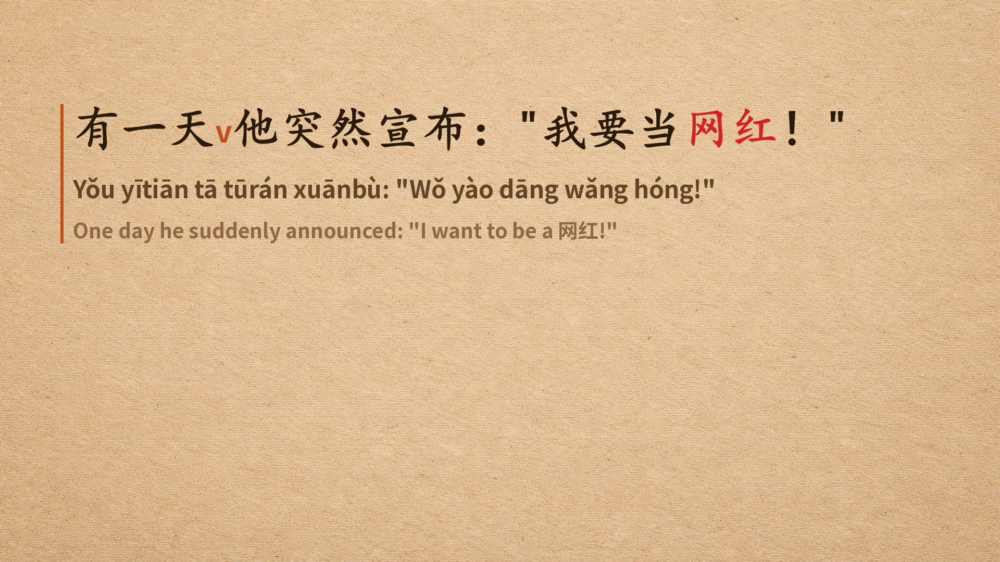
第一遍有一天他突然宣布："我要当网红！"
突然，表示出乎意料、没有预兆。
宣布，是一个比较正式的词，表示公开宣告。
小李突然宣布——这个组合是不是很有戏剧感？哈哈！
好，我们再来一遍——有一天他突然宣布："我要当网红！"
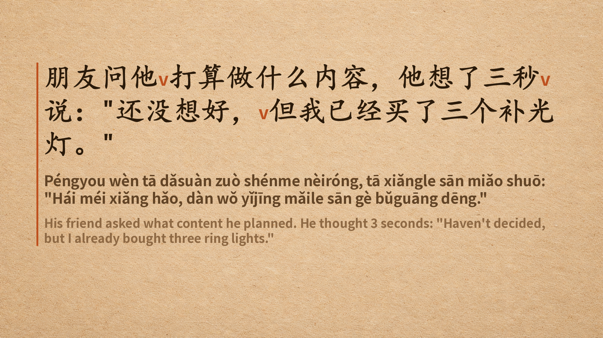
第一遍朋友问他打算做什么内容，他想了三秒说："还没想好，但我已经买了三个补光灯。"
打算，表示计划、想要做某件事。
比如：你打算做什么？我打算去旅游。
补光灯，就是拍照拍视频用的灯，ring light。
内容还没想好，但已经买了三个补光灯……这个操作，大家熟不熟悉？哈哈！
好，我们再来一遍——朋友问他打算做什么内容，他想了三秒说："还没想好，但我已经买了三个补光灯。"
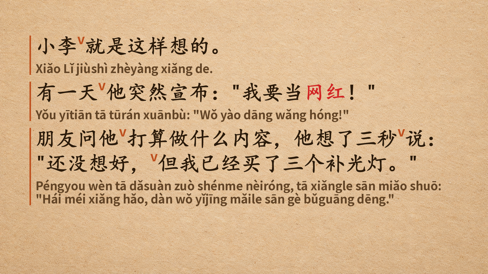
全文第二段结束！
小李下定决心当网红，虽然不知道拍什么，但补光灯已经准备好了。
那么结果怎么样呢？我们来看第三段！
第三段，见证奇迹的时刻到了！
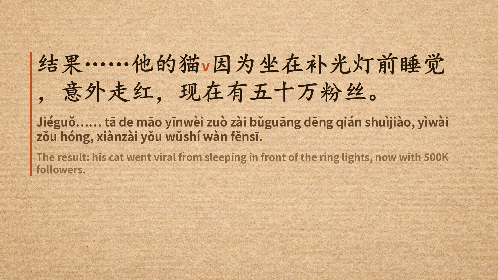
第一遍结果……他的猫因为坐在补光灯前睡觉，意外走红，现在有五十万粉丝。
意外，表示出乎意料。
走红，就是变得有名、爆红。
粉丝，就是fans，支持者。
五十万粉丝——五十万！这可不是一个小数字！
好，我们再来一遍——结果……他的猫因为坐在补光灯前睡觉，意外走红，现在有五十万粉丝。
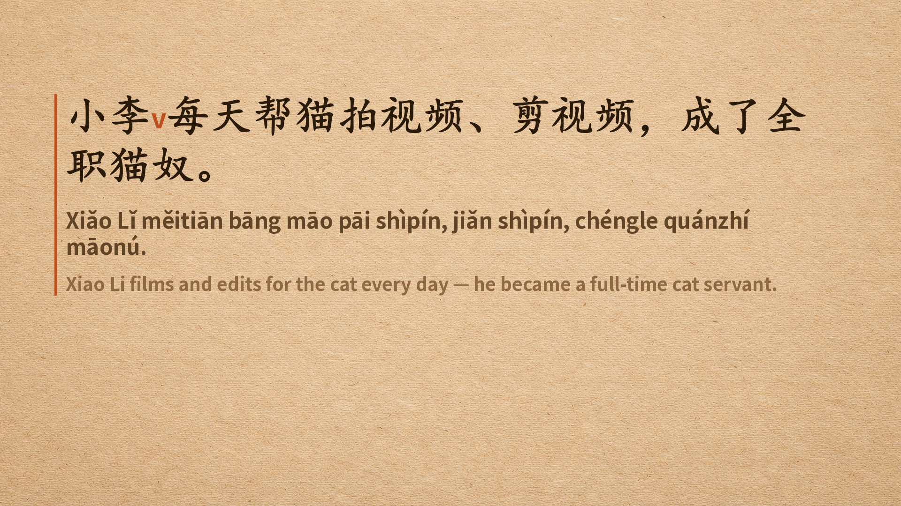
第一遍小李每天帮猫拍视频、剪视频，成了全职猫奴。
猫奴——这个词太有意思了！
奴，就是奴隶；猫奴，就是猫的奴隶，形容特别宠猫、为猫服务的人。
全职猫奴，就是全职为猫打工……哈哈，小李的梦想和现实差距有点大！
好，我们再来一遍——小李每天帮猫拍视频、剪视频，成了全职猫奴。
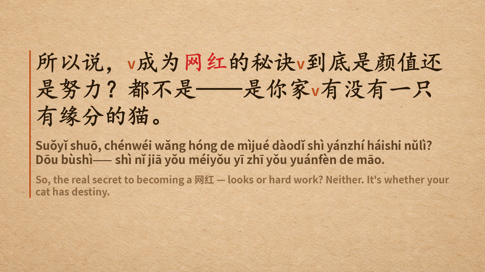
第一遍所以说，成为网红的秘诀到底是颜值还是努力？都不是——是你家有没有一只有缘分的猫。
秘诀，就是秘密的方法、诀窍。
颜值，就是外貌的分数，颜值高就是长得好看。
有缘分，表示命中注定的缘分。
所以，成为网红的秘诀不是颜值，不是努力，而是……你家有没有一只有缘分的猫！哈哈！
好，我们再来一遍——所以说，成为网红的秘诀到底是颜值还是努力？都不是——是你家有没有一只有缘分的猫。
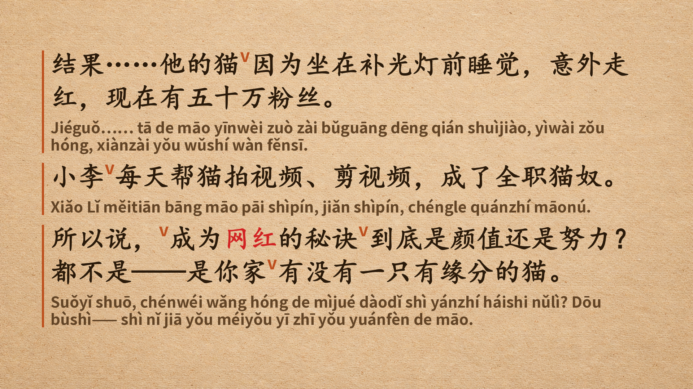
全文第三段结束！
最后当上网红的，不是小李，而是他的猫。
这就是生活！好，接下来我们来复习一下今天学的内容吧！
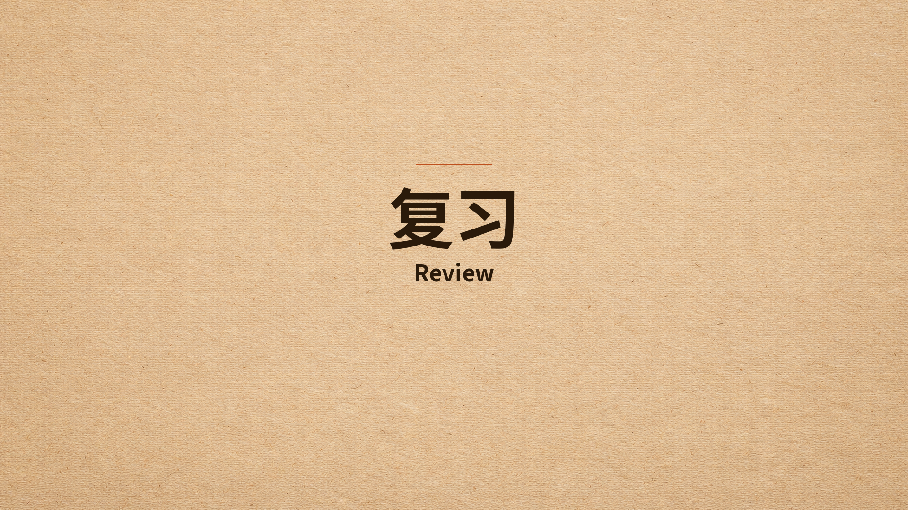
复习好，现在我们来复习一下今天学的内容。
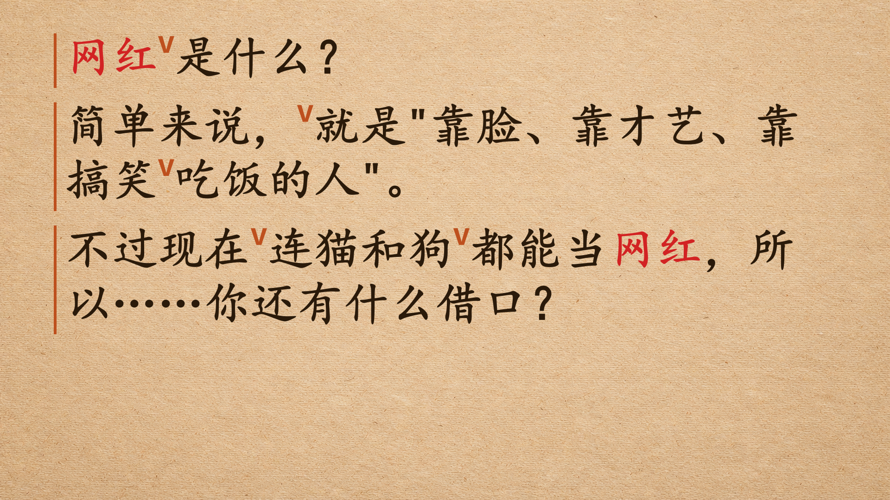
复习 1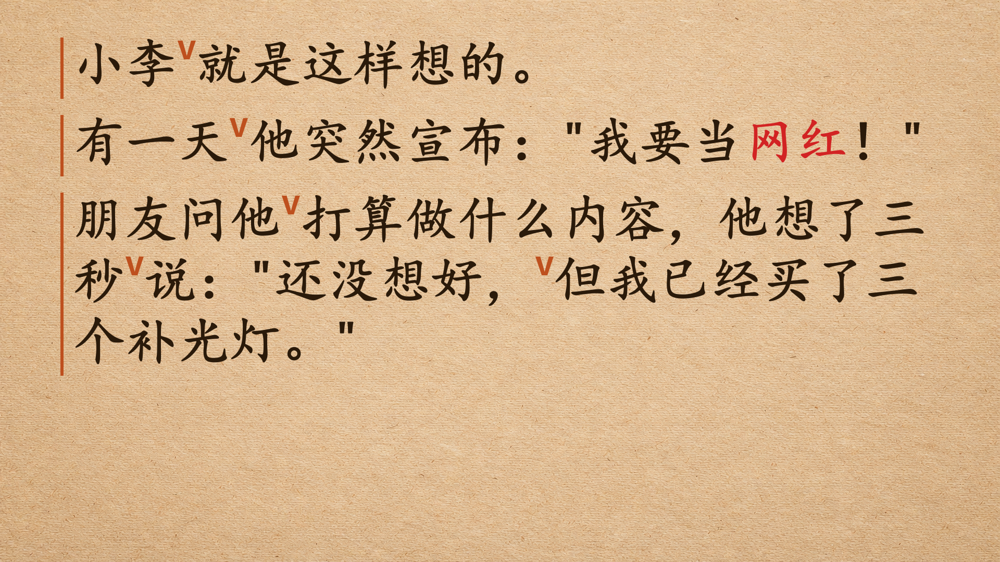
复习 2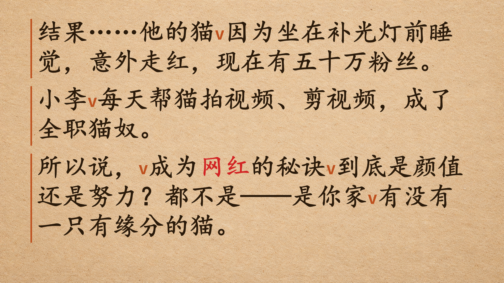
复习 3好，今天我们学了网红这个词，还学了很多实用的表达：
靠X吃饭、连……都……、打算、走红、颜值……
大家都记住了吗？
如果觉得有帮助，请点赞订阅，我们下次见！再见！